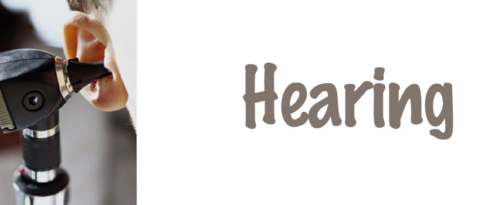

Professional Information
Published Scholarly Output
- Khoza, K., & Ross, E. (2002). Auditory function in a group of adults infected with HIV/AIDS in Gauteng, South Africa. South African Journal of Communication Disorders, 49, 17-27.
- Mupawose, A., Khoza, K., & Naran, V. (2007). Depression and pragmatics in adult patients who have sustained a mild traumatic brain injury. Journal of Psychology in Africa. 17 (207), 111- 114.
- Khoza K., Ramma L.,Mophosho M., & Moroka D. (2008). Digit Speech Reception Threshold Testing in Tswana/English speakers. South African Journal of Communication Disorders, 55, 20-28.
- de Andrade, V.; Khoza-Shangase, K. & Hajat, F. (2009). Perceptions of oncologists at two state hospitals in Gauteng regarding the ototoxic effects of cancer chemotherapy: a pilot study. African Journal of Pharmacy and Pharmacology 3(6): 307-318.
- Khoza-Shangase, K; Mupawose, A. & Mlangeni, N.P. (2009). Ototoxic effects of tuberculosis treatments: How aware are patients? African Journal of Pharmacy and Pharmacology, vol. 3(8), pp 391-399.
- Khoza-Shangase, K (2010). HIV/AIDS and auditory function in adults: the need for intensified research in the developing world. African Journal of Aids Research, vol 9(1), pp1-9.
- Khoza-Shangase, K & Turnbull, T. (2009). Hearing screening in a group of paediatric patients attending an HIV/AIDS clinic: A pilot study. African Journal of Infectious Diseases.vol 3(2), pp57-68.
- Khoza-Shangase, K, & Rifkind, R. (2010). Paediatric meningitis and hearing loss in a developing country: Exploring the current protocols regarding audiological management following meningitis. African Journal of Infectious Diseases, 4(2), pp51-60.
- Khoza-Shangase, K. Joubert, K. & Mayet, A (2011). The influence of epidural anesthesia on new-born hearing screening: A pilot study. Journal of Pharmacy and BioAllied Sciences. Vol 3(1), pp135-141.
- Khoza-Shangase, K. (2010). Is there a need for ototoxicity monitoring in patients with HIV/AIDS? African Journal of Pharmacy and Pharmacology, vol 4(9), pp 574-579.
- Khoza-Shangase, K. (2011). Highly Active Antiretroviral Therapy (HAART): Does it sound toxic? Journal of Pharmacy and BioAllied Sciences. Vol 3(1), pp142-153.
- Kanji, A., Khoza-Shangase, K. & Ballot, D. (2010). Hearing screening follow-up return rate in a very low birth weight project: A retrospective record review. South African Journal of Child Health. Vol 4(4), pp95-99.
- Khoza-Shangase, K. (2011). An analysis of auditory manifestations in a group of adults with AIDS prior to antiretroviral therapy. African Journal of Infectious Diseases. Vol 5(1), pp 11-22.
- Kanji, A., Khoza-Shangase, K. & Ballot, D. (2010). Hearing screening follow-up return rate in a very low birth weight project: A retrospective record review. South African Journal of Child Health. Vol 4(4), pp95-99.
- Khoza-Shangase, K., Barratt, J. & Jonosky, J. (2010). Protocols for early audiology intervention services: Views from early intervention practitioners in a developing country. South African Journal of Child Health. Vol 4(4), pp100-105.
- Pillay, D.; Moonsamy, S. & Khoza-Shangase, K. (2010). Bridging the Gap between early identification and intervention in the paediatric population with hearing impairments. South African Journal of Child Health. Vol 4(4), pp92-94.
- Khoza-Shangase, K. (2011). HIV/AIDS and audiology: Does evidence exist for more focused attention on this HIV/AIDS manifestation? ENT Focus, 1(2), 13-15.
- Barratt, J., Khoza-Shangase, K., & Msimang, J. (2012). Speech-language assessment in a linguistically diverse population: Preliminary exploration of the possible impact of informal ‘solutions’ within the South African context. South African Journal of Communication Disorders. In press.
- De Andrade, V., Khoza-Shangase, K. & Hajjat, F. (2010). Perceptions of Ototoxicity in Oncology. Germany: Lambert Academic Press.
- Khoza-Shangase, K. & Kassner, L. (2013). Automated screening audiometry in the digital age: Exploring new technologies. International Journal of Technology Assessment in Health Care. 29(1), pp42-47.
- Khoza-Shangase, K (2013). Ototoxicity in tuberculosis treatment in South Africa: Views from Healthcare Workers involved in the management of TB. African Journal of Pharmacy and Pharmacology. 7(30), pp2141-2145.
- Khoza-Shangase, K. & Mavrokordatos, M. (2013). The use of melatonin for sedation during auditory brainstem response testing: An alternative for sedation in Non-Medical settings? Journal of Pharmaceutical and Scientific Innovation (JPSI), Vol 2(5), pp60-66.
- Khoza-Shangase, K. & Jina, K (2013). Ototoxicity monitoring in general medical practice: Exploring perceptions and practices of general practitioners about drug-induced auditory symptoms. Innovations in Pharmaceuticals & Pharmacotherapy (IPP), Vol 1(3), pp 250-259.
- 22. Khoza-Shangase, K; Pillay D., & Moolla, A.; (2013). Diabetes and the audiologist: Is there need for concern regarding hearing function in diabetic adults? South African Journal of Diabetes and Vascular Diseases, 10(4), pp 127-133.
- Kanji A. & Khoza-Shangase, K. (2013). Clinical Signs and Symptoms of Tinnitus in Temporomandibular Joint Disorders: A pilot study comparing Patients and Non-Patients. South African Journal of Communication Disorders, 3(60):16-23.
- Khoza-Shangase, K & Michal, G. (2013). Early intervention in audiology: Exploring the current status from a developing country context. British Journal of Medicine and Medical Research
- Seabi, M.J., Seedat, J, Khoza-Shangase, K. & Sullivan L. (early cite 2014). Experiences of university students regarding transformation in South Africa. International Journal of Educational Management. Vol 28, Issue 1
- Burger, N, Khoza-Shangase, K. & Neille, J. (2013). The Educational Experiences of Deaf Adolescents in South Africa. Germany: Lambert Academic Press. ISBN Number 978-3-659-26426-9
- Petrocchi-Bartal, L & Khoza-Shangase, K. (2012). Newborn and infant hearing screening programmes in a developing country: Exploring the procedures and protocols in immunisation clinics. Beyond Newborn Hearing Screening: Infant and Childhood Hearing in Science and Clinical Practice, International Conference on Newborn Hearing Screening (NHS 2012)— Cernobbio (Como Lake), Italy. June 5-7, 2012, p 112.
Conference presentations
- Khoza, K., & Ross, E. (2002). Auditory function in a group of adults infected with HIV/AIDS in Gauteng, South Africa. Presented at the ENT/SASLHA congress in Cape Town, 2002.
- Kanji A, & Khoza, K. (2006). Tinnitus in Temporomandibular Disorder Patients and Non-Patients: A comparative pilot study of clinical signs and symptoms, POSTER presented at ENT/SASLHA congress in Cape Town.
- Jonosky, J., Khoza, K. & Barratt, J (2007). Current protocols for early intervention services in Gauteng’s private and government hospitals for speech-language pathology and audiology. Presented at the EHDI Conference, in August 2007 in Johannesburg.
- Mayet, A., Joubert, K., & Khoza, K. (2007). The influence of epidural anaesthesia on newborn hearing.Presented at the EHDI Conference, in August 2007 in Johannesburg. (Poster)
- Turnbull, T. & Khoza, K (2007). The audiological function in a group of paediatric patients attending a HIV/AIDS clinic at a hospital in Gauteng. Presented at the EHDI Conference, in August 2007 in Johannesburg.
- Khoza, K. & Barratt, J. (2007). Near normal hearing in a child with extensive cholesteatoma – a case report. Presented at the EHDI Conference, in August 2007 in Johannesburg. (Poster)
- Khoza, K. (2007). HIV/AIDS: Have we tested? The role of the Audiologist. Paper presented at the 4th HIV/AIDS Colloquium at the University of the Witwatersrand’s Emthonjeni Centre, November 2007.
- Khoza, K. (2007). ARV’s and ototoxicity: Does the regimen sound toxic? Paper presented at the 4th HIV/AIDS Colloquium at the University of the Witwatersrand’s Emthonjeni Centre, November 2007.
- Jonosky, J., Khoza, K. & Barratt, J (2007). Current protocols for early intervention services in Gauteng’s private and government hospitals for speech-language pathology and audiology. Presented at the ENT/SASLHA Conference, in October 2007 in Sun City. (Poster)
- Turnbull, T. & Khoza, K (2007). The audiological function in a group of paediatric patients attending a HIV/AIDS clinic at a hospital in Gauteng. Presented at the ENT/SASLHA Conference, in October 2007 in Sun City. (Poster)
- Khoza, K (2007). Audiologic monitoring for ototoxicity in adult patients on antiretroviral drugs attending a provincial hospital HIV/AIDS clinic in Johannesburg, Gauteng, South Africa. Presented at the ENT/SASLHA Conference, in October 2007 in Sun City.
- Mlangeni, N.P., & Khoza, K. (2007). Ototoxic effects of TB medication: Knowledge of Gauteng health care workers and TB patients. Presented at the ENT/SASLHA Conference, in October 2007 in Sun City. (Poster)
- Mupawose, A., Khoza, K., & Naran, V. (2007). Depression and pragmatics in adult patients who have sustained a mild traumatic brain injury. Presented at the Neuro Rehab Conference, in October 2007 in Durban. (Poster)
- de Andrade, V.; Khoza-Shangase, K. & Hajat, F. (2009). Perceptions of oncologists at two state hospitals in Gauteng regarding the ototoxic effects of cancer chemotherapy: a pilot study. ENT/SASHLA/SAAA 2009 Conference, November. (Poster)
- Rifkind, R. & Khoza-Shangase, K. (2009). Peadiatric meningitis and hearing loss in a developing country: Exploring the current protocols regarding audiologic management following meningitis. ENT/SASHLA/SAAA 2009 Conference, November
- Khoza-Shangase K. (2009). An investigation and monitoring of the auditory status in a group of adults with AIDS receiving ART and other therapies attending a provincial hospital HIV/AIDS clinic in Johannesburg, South Africa. ENT/SASHLA/SAAA 2009 Conference, November (Poster)
- Khoza-Shangase, K. (2009). Ototoxicity monitoring in a group of adults with AIDS receiving anti-retroviral and other therapies attending a provincial hospital HIV/AIDS clinic in Johannesburg, South Africa. Carnegie Foundation Research Evening. August 2009
- Khoza-Shangase, K. (2010). Taking advantage of research funding to advance your career at Wits, Wits – Carnegie Researchers Breakfast 2010, August. Invited key note address.
- Khoza-Shangase, K. (2010). Highly Active Antiretroviral Therapy (HAART): Does it sound toxic? ENT/SAAA 2010 Conference, October
- Moolla A., Pillay D. & Khoza-Shangase, K. (2010). Auditory characteristics of individuals diagnosed with type 1 diabetes mellitus in Gauteng, South Africa. ENT/SAAA 2010 Conference, October
- Mavrokordatos, M. N. & Khoza-Shangase, K. (2010). “Using Melatonin as a ‘sedative’ when recording Auditory Brainstem Responses (ABR).”ENT/SAAA 2010 Conference, October
- Seedat J, Penn, C & Khoza-Shangase, K (2010). Implementing the Frazier Free Water Protocol in a South African Government Hospital: Pilot Study Results. ENT/SAAA 2010 Conference, October
- Dos Santos, L; Joubert K, & Khoza-Shangase, K (2010). The prevalence of noise induced hearing loss amongst hairdressers. ENT/SAAA 2010 Conference, October
- Benn, S; Joubert, K. & Khoza-Shangase, K (2010). Central Auditory Processing in paediatric Attention-Deficit/Hyperactivity Disorder, Hyperactive-Impulsive type, with attention controlled ENT/SAAA 2010 Conference, October
- Khoza-Shangase, K. (2010). Advancing Women’s Careers within Academia. Human Genetics Department CPD activity (NHSL), 2010, October. Invited key note address.
- Khoza-Shangase, K. (2011). Quality assurance for clinical training at Wits, 2011, February. Invited key note address. Annual Supervision Workshop; University of the Witwatersrand.
- Kanji, A & Khoza-Shangase, K (2011). Newborn hearing screening: Is there a need to revisit targeted hearing screening in some developing countries? 6th Australasian Newborn Hearing Screening Conference, 8-9 April; The Esplanade Hotel, Fremantle, Australia.
- Khoza-Shangase, K. & Joubert, K. (2011). The influence of epidural anesthesia on new-born hearing screening: A pilot study. 6th Australasian Newborn Hearing Screening Conference, 8-9 April; The Esplanade Hotel, Fremantle, Australia.
- Kavallieratos, A. de Andrade, V & Khoza-Shangase, K. (2011). Effects of long term MDR TB treatment on the auditory system. SASLHA AGM & SEMINAR: Directions in Healthcare: The role of our professions, 27-28 May, Midrand Protea Hotel, Gauteng
- Khoza-Shangase, K. (2011). Embracing and celebrating academic and research excellence in pursuit of success: Can academic excellence ensure a successful life? Faculty of Humanities Annual Prize Giving Ceremony, 2011, April. Invited key note address.
- Khoza-Shangase, K. (2011). HAART: Does it sound toxic in adults?. ENT/SAAA/SASLHA 2011 Conference, Port Elizabeth, 23-26 October. Invited key note address.
- Petrocchi-Bartal, L & Khoza-Shangase, K. (2012). Newborn and infant hearing screening programmes in a developing country: Exploring the procedures and protocols in immunisation clinics. International Conference on Newborn Hearing Screening (NHS 2012)—Beyond Newborn Hearing Screening: Infant and Childhood Hearing in Science and Clinical Practice: Cernobbio (Como Lake), Italy. June 5-7, 2012.
- Coutts, K; Mupawose A. & Khoza-Shangase, K. (2012). That’s a difficult pill to swallow: Methods of assessing dysphagia in adults living with HIV/AIDS. ENT/SAAA/SASLHA 2012 Conference, Sun City, 03-07 November.
- George, K N., Neille J, & Khoza-Shangase, K (2012). Sound levels in neonatal intensive care unit: Current status. ENT/SAAA/SASLHA 2012 Conference, Sun City, 03-07 November.
- Moroe, FN & Khoza-Shangase, K (2012). Tinnitus and every day life: What tinnitus sufferers have to say. ENT/SAAA/SASLHA 2012 Conference, Sun City, 03-07 November.
- Khoza-Shangase, K. (2012). Pharmaco-audiology: A field deserving more attention in developing countries. ENT/SAAA/SASLHA 2012 Conference, Sun City, 03-07 November.
- Khoza-Shangase, K & Kessner, L (2012). The efficacy of IPOD screening audiometry: A comparative study. ENT/SAAA/SASLHA 2012 Conference, Sun City, 03-07 November.
- Khoza-Shangase, K. & Mavrokordatos, M (2012). The use of melatonin as a “sedative” during ABR testing. ENT/SAAA/SASLHA 2012 Conference, Sun City, 03-07 November.
- Khoza-Shangase, K. (2012). Defining the role of Audiology in the management of patients with HIV/AIDS. 2012 Speech Pathology & Audiology National Forum, 26-29 August. Bloem Spa Lodge, Bloemfontein.
- Khoza-Shangase, K. (2012). Audiology in the era of HIV/AIDS and TB: Concretizing clinical management and research plans in a developing country context. 2012 Speech Pathology & Audiology Continued Professional Development, 07 September. Invited address. Chris Hani Baragwanath Hospital, SOWETO.
- Petrocchi-Bartal, L & Khoza-Shangase, K. (2013). Exploring newborn and infant hearing screening procedures and protocols at North West and Gauteng Province immunisation clinics. JHB District Health Conference, JHB. June 13, 2013.
- Khoza-Shangase, K. (2013). Highly Active Antiretroviral Therapy (HAART) sounds toxic: Longitudinal evidence from a developing country context. Infectious Diseases World Summit; Boston MA, July 8-10
- Khoza-Shangase, K. (2013). In pursuit of increasing clinical evidence base: Publish or perish as evidence-based clinicians 2013 Speech Pathology & Audiology National Forum. Invited address. Chris Hani Baragwanath Hospital, SOWETO
- Khoza-Shangase, K. (2013). Peadiatric Audiology: development, testing and habilitation of hearing (Master of Science in Medicine in Child Health and Neurodevelopment Course). Invited Workshop. Health Sciences, WITS
Other resources
- Practice brochure for doctors. Click here to download.
- Audiology publications: http://www.worldaudiology.com/contents/audiology.htm
- Audiology resources website: http://www.worldaudiology.com
- Dysphagia resources website: http://www.dysphagia.com